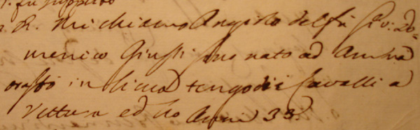

|
(Ciocio) 8/41 Nato ad Ambra (AR) intorno al 1762 circa Morto a Siena (S.Salvatore in S.Agostino) il 2 febbraio 1799 (cfr.) Fratello di Marcaccio (Marco Giusti) 
- Dal "Capitano di Giustizia" sappiamo che era figlio Giovan Domenico, che era nativo di Ambra dove rimase fino all'età di 8 anni per trasferirsi a Rapolano dove rimase per altri sedici anni e quindi giungere a Siena andando ad abitare nei pressi della locanda dei Tre Re in qualità di domatore di cavalli. - Insieme a Niccolò Chiarini detto Caino e Giuseppe Chiarini detto Gobbo Chiarini detiene il record di aver corso in tutte 17 le contrade (cfr.). - Egli è uno dei sei fantini della Storia del Palio di Siena che conclusero la loro carriera con una vittoria, poiché morirono improvvisamente dopo l'ultima vittoria sul Campo. Essi sono Biggèri, Ciocio, Folaghino, Marzialetto, Mattiaccio e Pelliccino. - Egli è uno dei quattro fantini della Storia del Palio di Siena che vinsero da esordienti e restarono anche imbattuti a fine carriera, poiché o morirono improvvisamente dopo l'ultima vittoria sul Campo o si ritirarono (Renzino). Essi sono Biggèri, Ciocio, Folaghino e Renzino.   

Il nome di Ciocio, fra i tanti episodi di storia paliesca di cui si rese protagonista, certamente sarà ricordato come il primo fantino che vinse il Palio con il cavallo scosso. Nell'agosto del 1784 Ciocio corre nella Torre: la partenza è ottima e prende subito la testa, e in tale posizione rimane fino al secondo San Martino quando cade nell'affrontare la curva. La vittoria sembra ormai sfumata, soprattutto quando il cavallo al successivo passaggio a San Martino dà l'impressione di volersi fermare. Ma Ciocio, rimasto fermo nel punto della caduta, "gli diede due botte e lo indirizzò nel corso". E lo fece con tale efficacia che il cavallino mise le ali ai piedi, raggiunse e superò ben presto la Giraffa, che nel frattempo era passata in testa, ed andò a cogliere per i torraioli una grande e ormai insperata vittoria. Ciocio era considerato un senese di adozione e come tale fu, insieme al fratello Marcaccio, uno dei maggiori rappresentanti di quel gruppo di fantini autoctoni che nell'ultima parte del XVIII secolo diedero vita ad una vera e propria faida che fu all'origine di numerosi episodi di violenza fra fantini al giorno d'oggi assolutamente inimmaginabile. Per la descrizione di alcuni di tali fatti, rimandiamo il lettore alla scheda di Dorino e di Piaccina. Come per molti dei fantini suoi contemporanei, la bravura ed il coraggio erano pari all'infedeltà e al doppio gioco, tantochè il Bandini, speriamo con un poco di esagerazione, in occasione della vittoria riportata da Ciocio nel luglio del 1797 per i colori della Tartuca afferma che "fu questa l'unica volta che non fece birbonate". Chi in particolare ebbe a soffrire di questa sua propensione alle birbate sembra sia stato il Bruco che, per ben due volte ebbe molto a che ridire sulle prestazioni di Ciocio. Nel luglio 1790 con il giubbetto giallo-verde, nonostante montasse un ottimo cavallo vittorioso nel palio precedente, fece di tutto pur di non vincere ed il Gagliardi non può escludere che all'origine di questo suo atteggiamento ci potesse essere un giro di scommesse clandestine allora abbastanza comuni. Ma ancora peggio fece nell'agosto del 1792, quando sempre per i colori del Bruco, pur di non passare in testa, arrivò persino a nerbare nel posteriore il cavallo del Montone che aveva difficoltà a superarlo. Questa volta la pazienza dei brucaioli si esaurì e solo l'intervento della Truppa Civica evitò al termine della corsa che una aggressione a Ciocio da parte dei contradaioli inferociti finisse in tragedia. Forse è inutile ricordare che Ciocio, fino al termine della carriera non montò più nel Bruco. Esordì giovanissimo, a tredici o quattordici anni, e stabilì subito il primato mai superato di vincere i primi tre Palii corsi. Terminò la sua carriera di fantino nello stesso modo di come l'aveva iniziata: vincendo.   Corse pure due volte il Palio di Lucca e precisamente il 21 e il 29 settembre 1793.
La corsa del 29 settembre ebbe per protagonisti anche Dorino e Piaccina che peraltro vinse il premio.  
 |